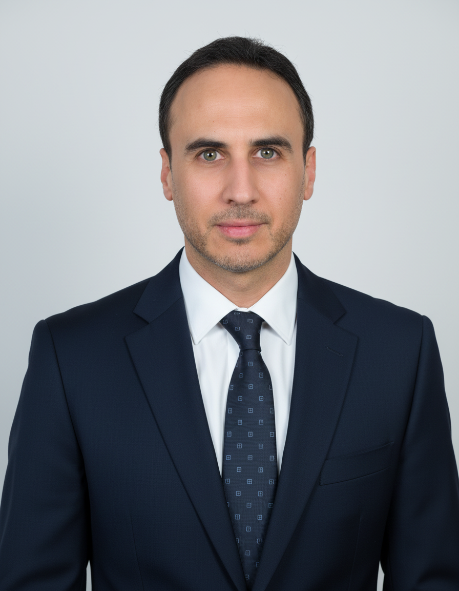

Founder & Owner
About
Me
Wesam Abdelrahman Aboud is a UAE- and Oman-based entrepreneur who has founded and built five independently owned businesses spanning agricultural trade, irrigation systems, greenhouse construction, and manufacturing — beginning with a single agricultural supply company in Al Ain in 1999.
Executive Founder Profile
At a Glance
Leadership & Growth Journey
Growth Timeline
- 1999Warood Alrabee Agricultural — UAEFounding company. Agricultural supply and distribution, established in Al Ain.
- 2015Laurette Green HouseExpansion into greenhouse construction and agricultural structures.
- 2018Warood Alrabee Agricultural — OmanExtension of the founding business into the Sultanate of Oman.
- 2020Al Wassel IrrigationDedicated irrigation systems and equipment supply, based in Dubai.
- 2020Techno PlastFirst manufacturing venture — HDPE irrigation products, Abu Dhabi.
- 2025Barari Fertilizer ManufacturersMost recent venture. Granular fertilizer manufacturing in Oman.
Five independent companies, one owner
Business Portfolio
Techno Plast
ManufacturingManufactures HDPE irrigation pipe, GR drip hose, agricultural ground barrier, and drip emitters, using a blend of virgin HDPE and recycled/reprocessed pellets. The group's first move into direct manufacturing.
Barari Fertilizer Manufacturers
ManufacturingManufactures granular fertilizer for the agricultural distribution market. The most recent addition to the portfolio.
Warood Alrabee Agricultural
TradingThe founding business. Supplies pesticides, seeds, organic and chemical fertilizers, irrigation materials, greenhouse materials, and agricultural machinery. Registered with the UAE Ministry of Climate Change and Environment for pesticide and fertilizer products.
Al Wassel Irrigation
TradingSupplies irrigation systems and equipment to the agricultural and landscaping market in Dubai.
Laurette Green House
ConstructionSupplies and constructs greenhouses — plastic, polycarbonate, and mesh — and related agricultural structures, including nurseries and poultry sheds, with installation and materials warranty.
Footprint & Regulatory Standing
Geographic Presence
United Arab Emirates
Al Ain · Abu Dhabi · Dubai
Sultanate of Oman
Al Suwaiq and surrounding region
Warood Alrabee Agricultural is registered with the United Arab Emirates Ministry of Climate Change and Environment for the trade of pesticide and fertilizer products — a licensing requirement for legal operation in this category within the UAE.
Five companies. One continuous line of work — from agricultural distribution to the manufacturing behind it.
This profile introduces Wesam Abdelrahman Aboud and the scope of his work. It is provided for informational purposes and does not constitute an offer, solicitation, or request for capital.